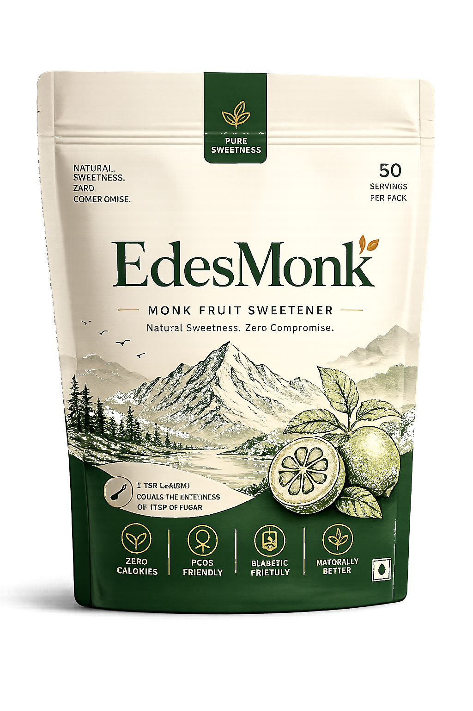

Balanced Sweetness
Enjoy a familiar sweetness profile that works smoothly in everyday recipes.
Natural monk fruit sweetener
EdesMonk brings clean, balanced sweetness to coffee, tea, baking, and desserts without the heavy sugar feeling. One teaspoon matches the sweetness of one teaspoon of sugar.

Why choose EdesMonk
Enjoy a familiar sweetness profile that works smoothly in everyday recipes.
Stir it into coffee, tea, smoothies, desserts, sauces, and baked goods.
Keep the taste you enjoy while reducing the amount of regular sugar you use.
Product highlights
Everyday
A smooth all-purpose sweetener for hot drinks, breakfast bowls, and light desserts.
EnquirePopular
Designed for homes that want a dependable sweetener ready for the whole week.
EnquirePortable
Convenient for office coffee, travel routines, and sweetness on the move.
EnquireHow to use
Stir into hot or iced drinks for a clean sweet finish.
Add to oats, smoothies, curd bowls, and fruit toppings.
Use in puddings, sweets, cookies, cakes, and sauces.
Customer stories
"Finally, a sweetener that tastes good and fits my routine."
"It has become my go-to for coffee and desserts."
"The flavor is clean and balanced, with no harsh aftertaste."
Frequently asked questions
Yes. It works well in many sweet recipes, especially when paired with a baking-friendly blend.
It offers pleasant sweetness with a cleaner flavor profile than many artificial alternatives.
Many people enjoy monk fruit sweetener as part of sugar-free or low-carb lifestyles.